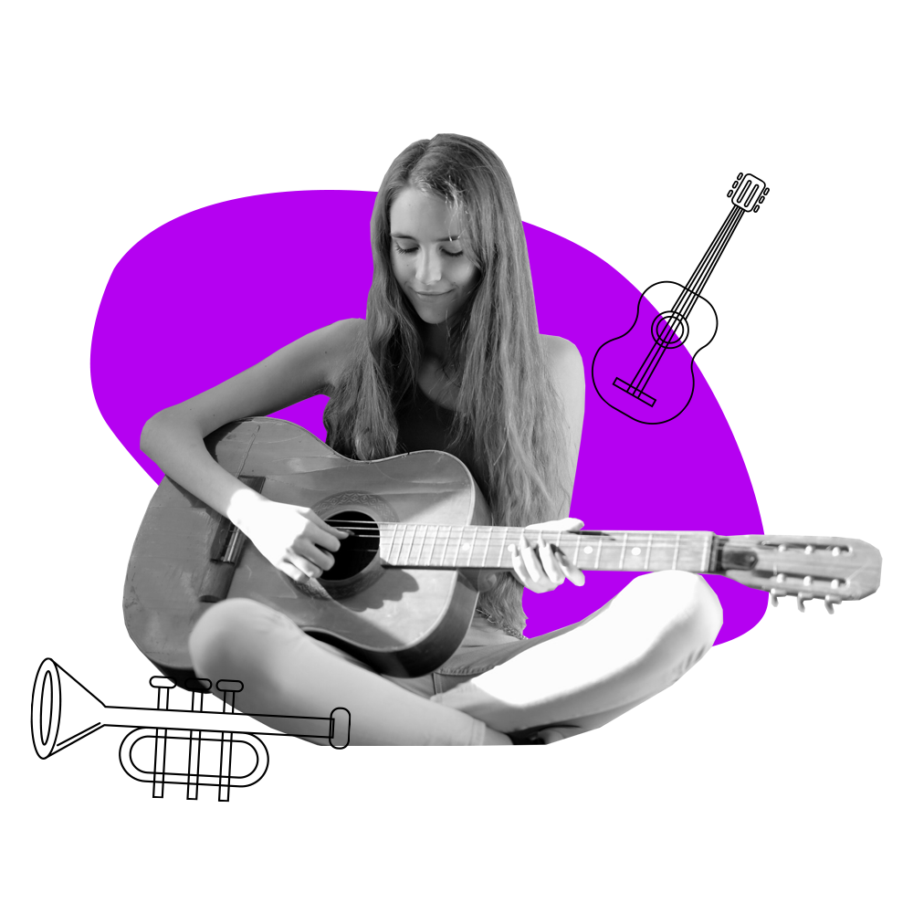
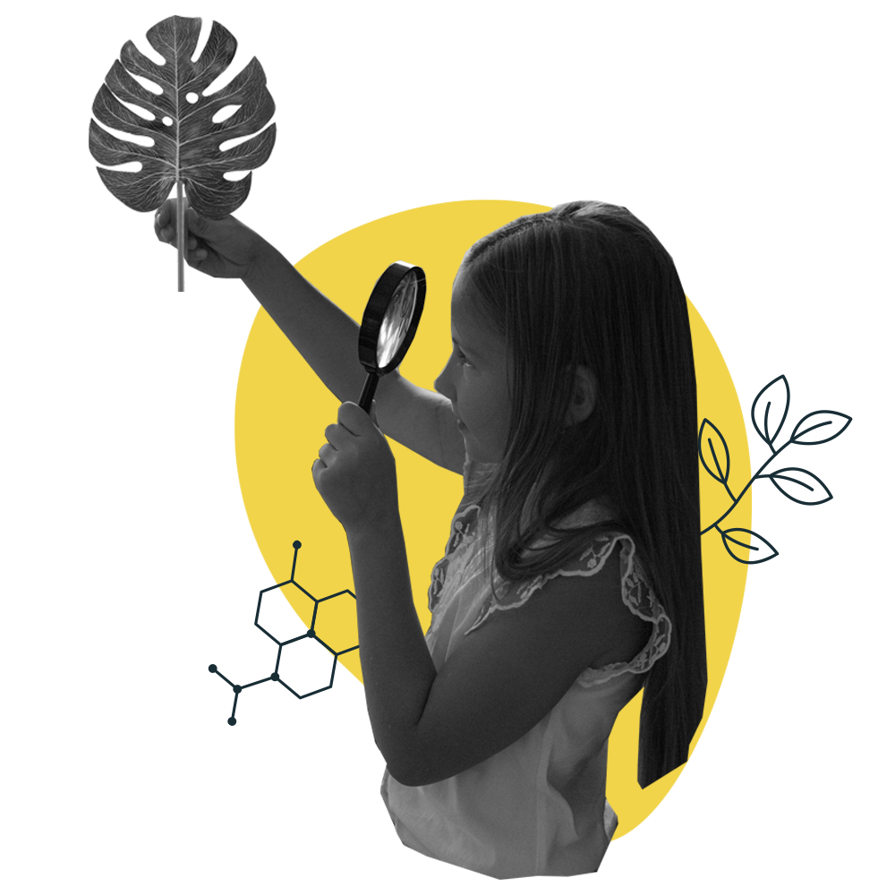
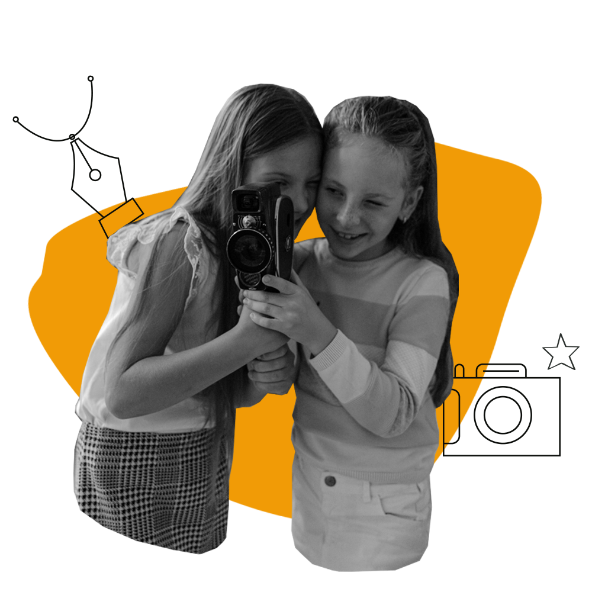

Логико-математический
любит решать логические задачи и головоломки,
мыслит на более абстрактном уровне по сравнению со своими сверстниками,
разбирается в причинно-следственных связях
Лингвистический
всегда может договориться,
любит читать и сочинять,
имеет богатый лексический запас,
диалоги звучат у него в голове и затем выплескиваются
на бумагу

Музыкальный
двигается и говорит в ритмичной манере,
запоминает мелодии песен, с удовольствием поет
или играет на инструменте,
постоянно напевает про себя и ритмически постукивает по столу даже за обедом

Натуралистический имеет способность к изучению флоры и фауны, мира природы,
легко распознают и классифицируют растения, животных и другие объекты в природе,
любит охоту, фермерство или занятия биологическими науками.

Межличностный
любит общаться,
регулярно оказывается лидером,
умеет сопереживать и проявлять заботу о других, налаживать контакты и понимать окружающих,
видит сильные и слабые стороны людей, объединяет коллектив
Телесно-кинестетический
движение помогает ему думать и решать проблемы,
удачно копирует жесты и мимику,
трогает все, что видит,
любит разбирать собирать предметы, бегать, прыгать, заниматься спортом
Внутриличностный
понимает свои плюсы и недостатки,
отличается независимостью и силою воли,
предпочитает работать в одиночестве,
точно описывает свои чувства и учится на своих ошибках,
умеет посмотреть на себя со стороны